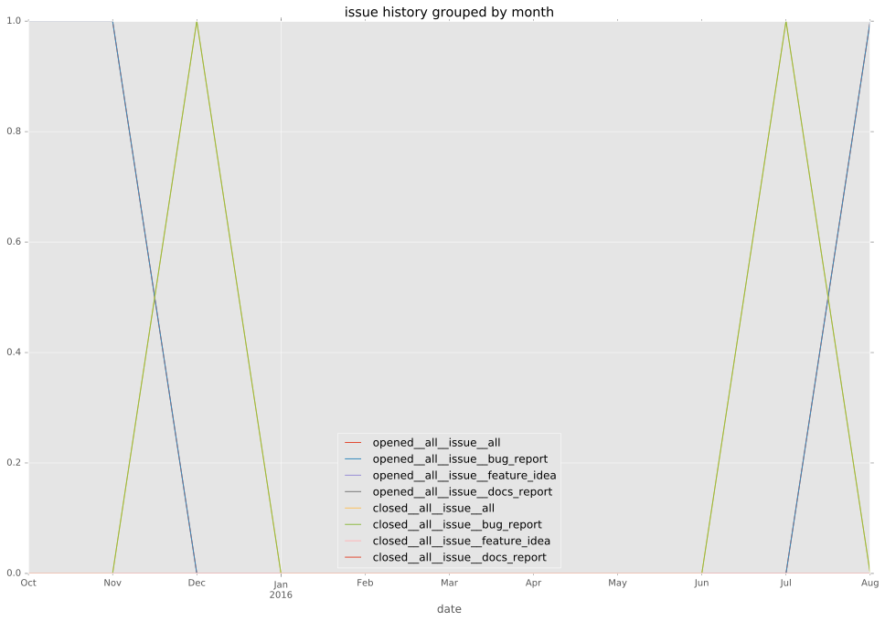
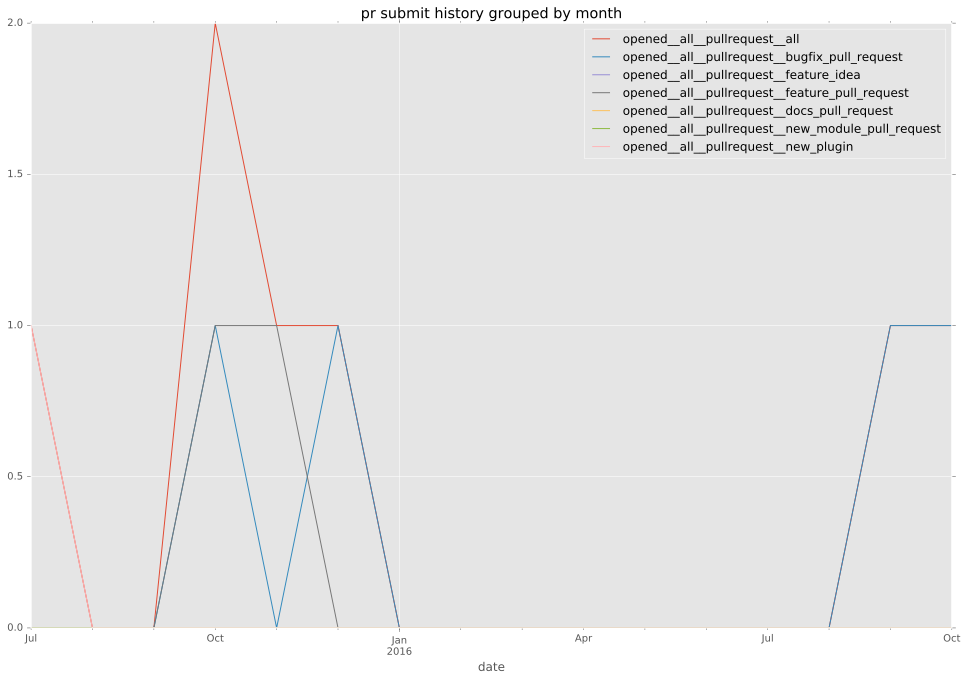
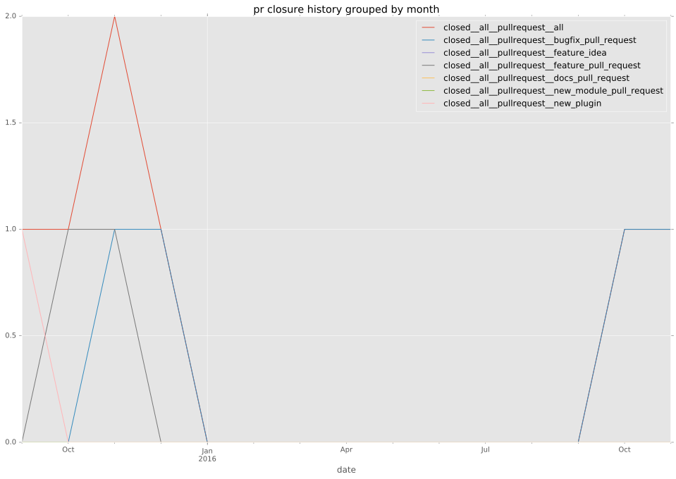
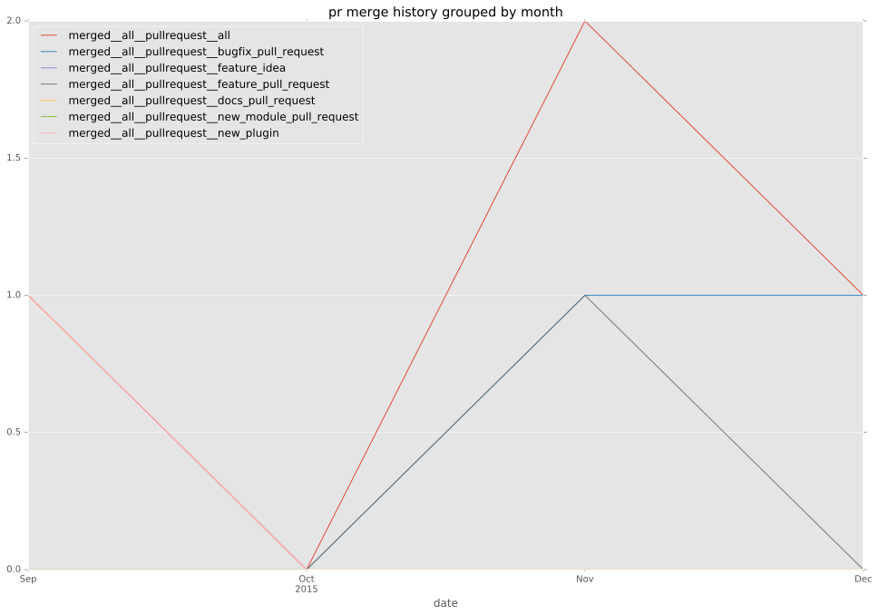
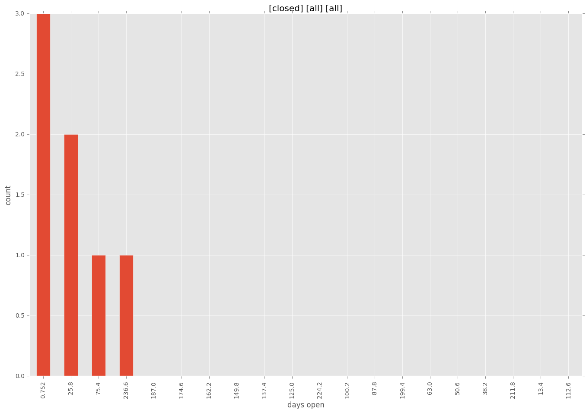
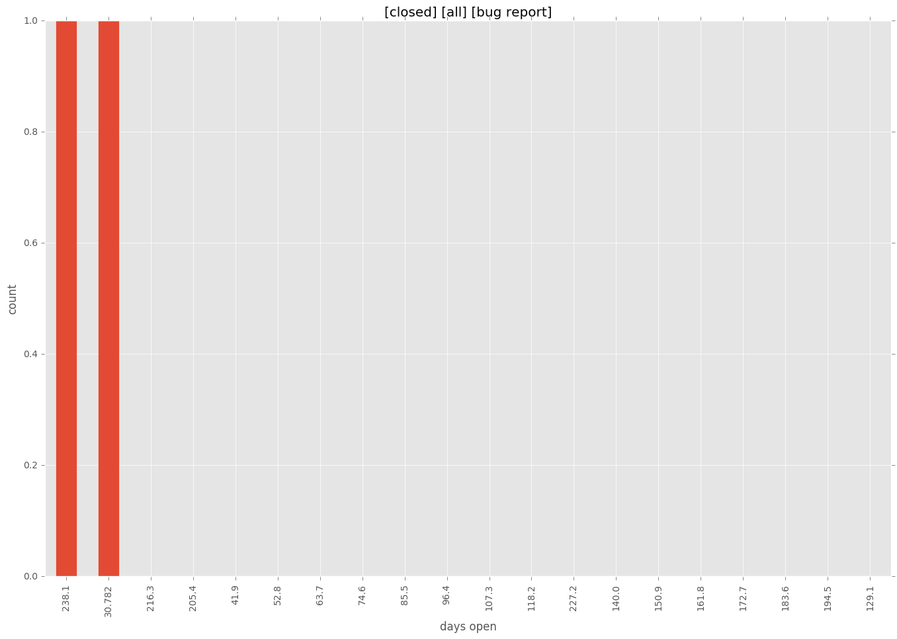
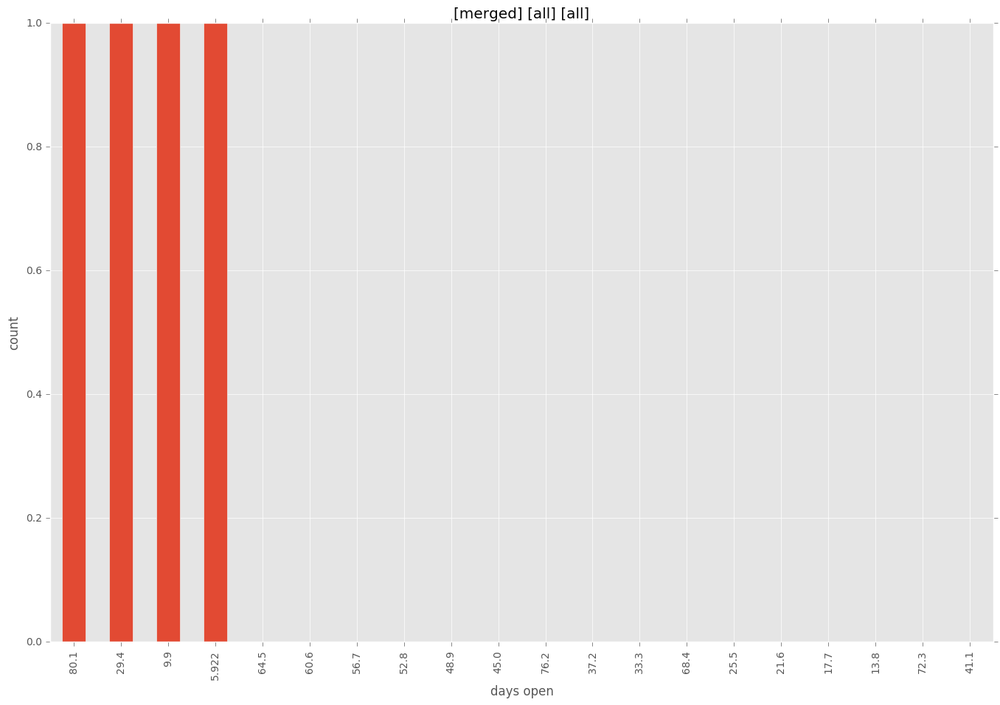
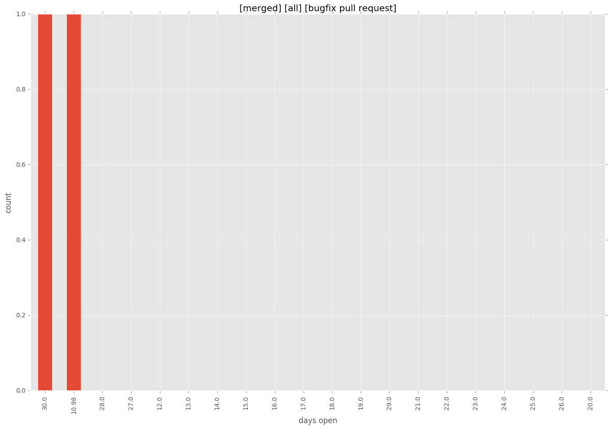
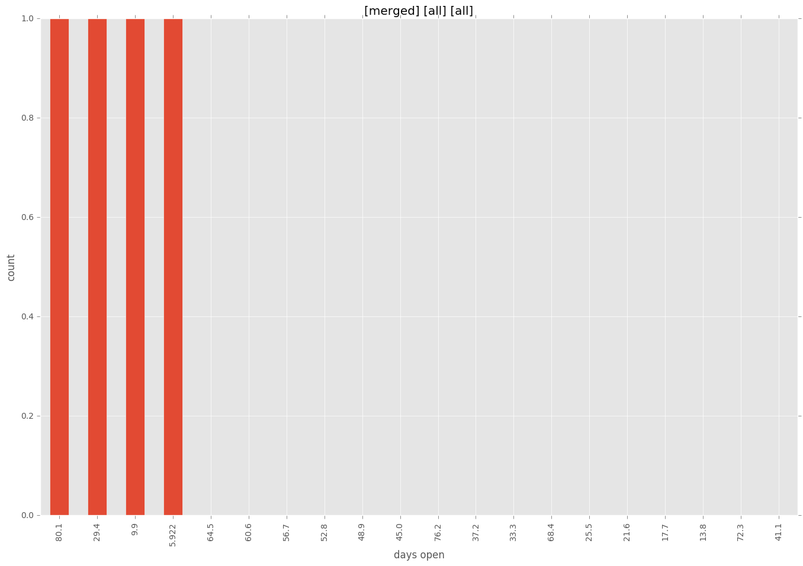
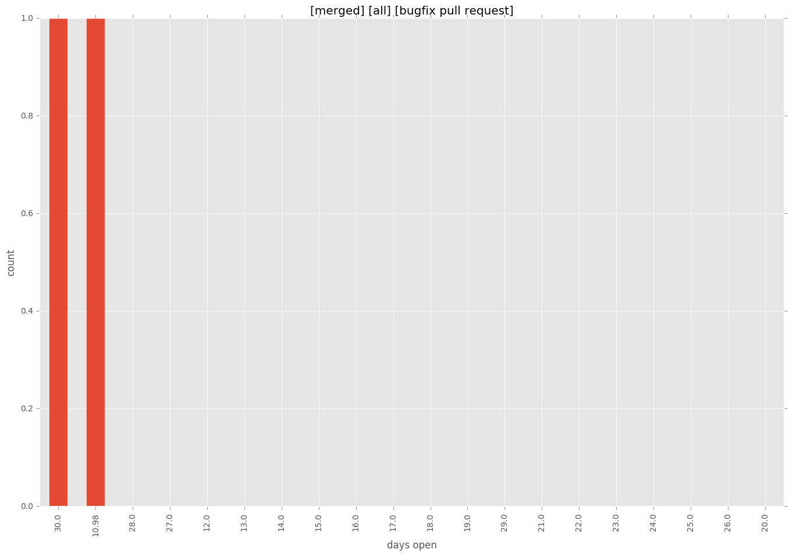

authors
- smadam813
- georgefrank
- h0nIg
maintainers
- smadam813
- h0nIg
contributors
- gfrank : 27 commits
- h0nIg : 13 commits
total issue counts
feature pull request: 2
pullrequest: 6
bugfix pull request: 3
issue: 3
new plugin: 1
bug report: 3
issue history

pullrequest history



days open by issue type
bugfix pull request
count: 4
std: 11.5470053838
min: 11
max: 31
median: 21.0
mean: 21.0
all
count: 11
std: 72.3247725698
min: 1
max: 249
median: 31.0
mean: 49.5454545455
pullrequest
count: 0
std: nan
min: nan
max: nan
median: nan
mean: nan
feature pull request
count: 3
std: 2.88675134595
min: 1
max: 6
median: 6.0
mean: 4.33333333333
issue
count: 0
std: nan
min: nan
max: nan
median: nan
mean: nan
new plugin
count: 2
std: 0.0
min: 84
max: 84
median: 84.0
mean: 84.0
bug report
count: 2
std: 154.149278299
min: 31
max: 249
median: 140.0
mean: 140.0
closures grouped by total days open



 


